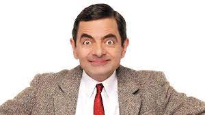
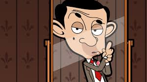
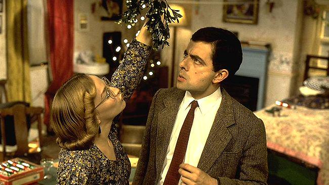
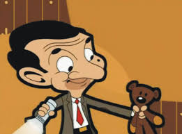
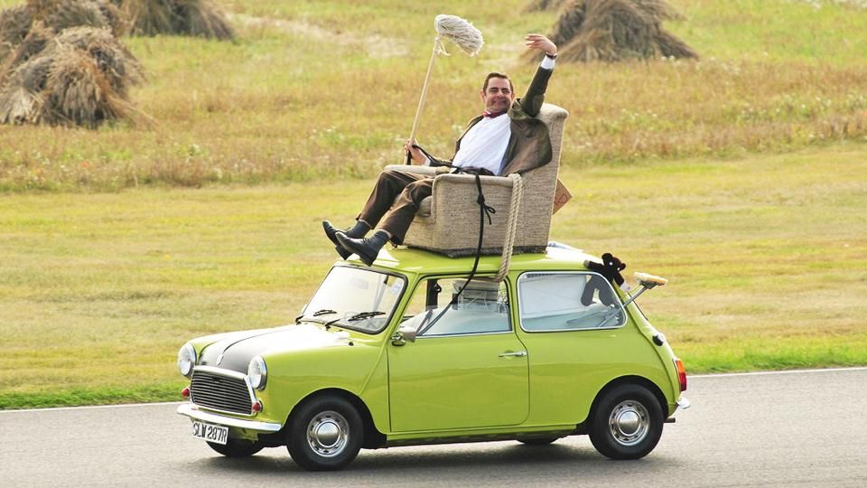

British actor and comedian who delighted television and film audiences with his comic creation Mr.Bean. He is English actor, comedian, and writer. He is best known for his work on the sitcoms Blackadder and Mr. Bean. British actor and comedian who delighted television and film audiences with his comic creation Mr.Bean. He is English actor, comedian, and writer. He is best known for his work on the sitcoms Blackadder and Mr. BeanBritish actor and comedian who delighted television and film audiences with his comic creation Mr.Bean. He is English actor, comedian, and writer. He is best known for his work on the sitcoms Blackadder and Mr. Bean

Origin
The character of Mr. Bean was developed while Rowan Atkinson was studying for his master's degree in electrical engineering at The Queen's College, Oxford. A sketch featuring Bean was shown at the Edinburgh Fringe in the early 1980s. A similar character called Robert Box, also played by Atkinson, appeared in the one-off 1979 ITV sitcom Canned Laughter which also featured routines used in the motion picture in 1997.
One of Bean's earliest appearances occurred at the "Just for Laughs" comedy festival in Montreal, Quebec, Canada, in 1987. When programme coordinators were scheduling him into the festival programme, Atkinson insisted that he perform on the French-speaking bill rather than the English-speaking programme. Having no French dialogue in his act at all, programme coordinators could not understand why Atkinson wanted to perform on the French bill instead. As it turned out, Atkinson's act at the festival was a test platform for his character and he wanted to see how his character's physical comedy would fare on an international stage with a non-English speaking audience.
The character's name was not decided until after the first episode had been produced; a number of other vegetable-influenced names such as "Mr. Cauliflower" were explored.Atkinson cited the earlier comedy character Monsieur Hulot, created by French comedian and director Jacques Tati, as an influence on the character.Atkinson also cited the influence of Peter Sellers, who had previously played similar "fumbling fool" characters, notably Hrundi Bakshi in The Party (1968) and Inspector Clouseau in The Pink Panther films.Stylistically, Mr. Bean is also similar to early silent films, relying purely upon physical comedy with Mr. Bean speaking very little dialogue (although like other live-action sitcoms during this period, it featured a laugh track). This has allowed the series to be sold worldwide without any significant changes to dialogue.In November 2012, Atkinson told The Daily Telegraph of his intentions to retire the character, stating that "someone in their fifties being childlike becomes a little sad.In 2016, however, Atkinson changed his mind by saying that he would never retire playing Mr. Bean.
Characters and recurring props
Mr. Bean
The title character and main protagonist, played by Rowan Atkinson, is a childish buffoon who brings various unusual schemes and contrivances to everyday tasks. He lives alone at the address of Flat 2, 12 Arbour Road, Highbury, and is almost always seen in his trademark tweed jacket and a skinny red tie. He also usually wears a digital calculator watch. Mr Bean rarely speaks, and when he does, it is generally only a few mumbled words which are in a comically low-pitched voice. His first name (he names himself "Bean" to others) and profession, if any, are never mentioned. In the first film adaptation, "Mr" appears on his passport in the "first name" field and he is shown employed as a guard at London's National Gallery.
Mr Bean often seems unaware of basic aspects of the way the world works, and the programme usually features his attempts at what would normally be considered simple activities, such as going swimming, using a television set, interior decorating or going to church. The humour largely comes from his original (and often absurd) solutions to problems and his total disregard for others when solving them, and his pettiness and occasional malevolence.
In the title sequence of episode two, Mr Bean falls from the sky in a beam of light accompanied by a choir singing Ecce homo qui est faba ("Behold the man who is a bean") which was sung by the Southwark Cathedral choir in 1990. The opening sequence was initially in black and white in episodes two and three, which was intended by the producers to show his status as an "ordinary man cast into the spotlight". However, later episodes showed Mr Bean dropping from the night sky in a deserted London street against the backdrop of St Paul's Cathedral. At the end of episodes three and six, he is also shown being sucked right back up into the sky in the respective background scenes. Regarding the opening credits, Atkinson has acknowledged that Bean "has a slightly alien aspect to him".In the Mr. Bean: The Animated Series episode "Double Trouble", the alien aspect of him was used in a storyline in which he is taken inside a spacecraft with aliens who look exactly like him and even have their own plushy toys. In an obvious homage towards the end, the aliens send him back home in a beam of light and music similar to the opening of the original Mr Bean series. Whether Bean is an extraterrestrial is not made clear.

Irma Gobb
Mr. Bean's long-suffering girlfriend, Irma Gobb (played by Matilda Ziegler), appears in three episodes. In "The Curse of Mr. Bean" and "Mr. Bean Goes to Town", the character is simply credited as "the girlfriend". She is treated relatively inconsiderately by Bean, who appears to regard her more as a friend and companion rather than as a love interest. However, he does become jealous when she dances with another man at a disco in "Mr. Bean Goes to Town", and she certainly expects him to propose to her on Christmas Day in "Merry Christmas, Mr. Bean"; his failure to do so results in her leaving him for good. Despite this, she later reappears in Mr. Bean: The Animated Series. It is revealed in the book Mr. Bean's Diary that Bean met Irma Gobb at a local library.Ziegler has also played a waitress, a mother and a policewoman.

Teddy
Teddy is Mr. Bean's teddy bear and, apparently, best friend. This little brown bear is a knitted oddity with button eyes and sausage-shaped limbs which invariably end up broken in half or in various other states of destruction and disfiguration. Although Teddy is inanimate, Mr. Bean often pretends it is alive: he always buys it a Christmas present or tries not to wake it up in the morning. For example, when Mr. Bean hypnotizes Teddy, he snaps his fingers and the bear's head falls backwards as if it had fallen asleep instantly. (Bean used his finger to prop Teddy's head up.) Teddy is often privy to Mr. Bean's various schemes and doubles as a tool or other items in emergencies; it has been decapitated ("Mr. Bean in Room 426"), used as his paint brush ("Do-It-Yourself Mr. Bean") and shrunk in the wash. Teddy is also Mr. Bean's "pet" in "Hair by Mr. Bean of London" where he is used to win a pet show.
Over the years, Teddy has undergone several changes. When it debuted on "The Trouble with Mr. Bean", it had a smaller head. Two episodes later, its head reached its current size but its "eyes" were not present until Bean placed gold thumb tacks on its face. The "eyes" have since been replaced with two small white buttons sewn over Teddy's face, giving it a distinctive image.
After filming ended, Teddy was donated by Atkinson to Gyles Brandreth's Teddy bear museum in Stratford-upon-Avon. In 2008 upon the museum's closing, Teddy was sold at auction for £180.

The Mini
Mr Bean's vehicle, a citron-green 1977 British Leyland Mini 1000 Mark with a matte black bonnet, was central to several antics such as Bean getting dressed in it, driving while sitting in an armchair strapped to the roof or attempting to avoid a car park fee by driving out through the entrance. In the pilot episode, Bean's vehicle was originally an orange 1969 BMC Morris Mini 1000 Mark 2 (registration RNT 996H) but was accidentally destroyed in an off-screen crash at the end. Throughout the sitcom, Bean keeps it locked with a bolt-latch and padlock rather than the lock fitted to the car, which formed a running gag in several episodes; in two episodes, he demonstrated an additional and innovative security measure in that he removes the steering wheel instead of the key which in one episode deterred a car thief. In "Back to School Mr. Bean", Bean's Mini is crushed by a tank as part of a demonstration after he replaced an identical Mini (registration ACW 497V) meant for the demonstration with his own to secure a parking space. After losing it, he removes his padlock and bolt-latch from the remains. Although the Mini has been crushed, it nonetheless reappears in subsequent episodes with the same colours and registration number (SLW 287R) as the car that has been crushed.
There were three Minis painted green and black used in the series, as well as two others painted with the same colour scheme but with no engine that got crushed by the tank. One of the main cars was also crushed by the tank. During filming many parts were swapped from car to car throughout production, including bonnets, wheel trims, grilles, steering wheels, rear lights, occasionally the driver's door, and the seat covers.
After filming ended, one of the original Minis was sold to Kariker Kars to be hired for various events whereupon it was temporarily displayed as a major attraction at the Rover Group's museum. In 1997, it was purchased by the Cars of the Stars Motor Museum and displayed for a number of years, later being sold on to a museum in the United States. The main Mini is privately owned and nearing the end of restoration in the south of England.

Episodes
All 15 episodes of Mr. Bean were produced by Tiger Aspect Productions. Additionally, the character has been used in one-off sketches, guest appearances and television commercials in the United Kingdom.
The fourteenth episode, "Hair by Mr. Bean of London", was originally released as a direct-to-video VHS exclusive in 1995, and was not broadcast on television until 25 August 2006 on Nickelodeon.
Broadcast
All 15 episodes of Mr. Bean were produced by Tiger Aspect Productions. Additionally, the character has been used in one-off sketches, guest appearances and television commercials in the United Kingdom.
The fourteenth episode, "Hair by Mr. Bean of London", was originally released as a direct-to-video VHS exclusive in 1995, and was not broadcast on television until 25 August 2006 on Nickelodeon.